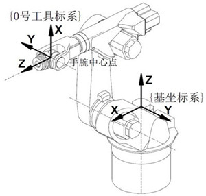
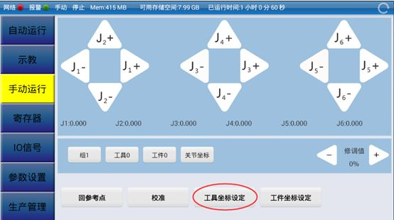
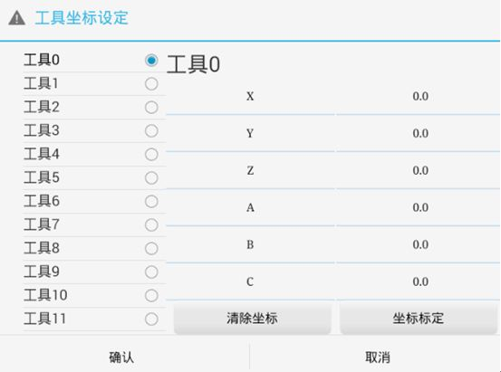
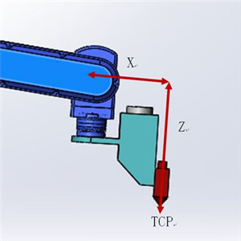
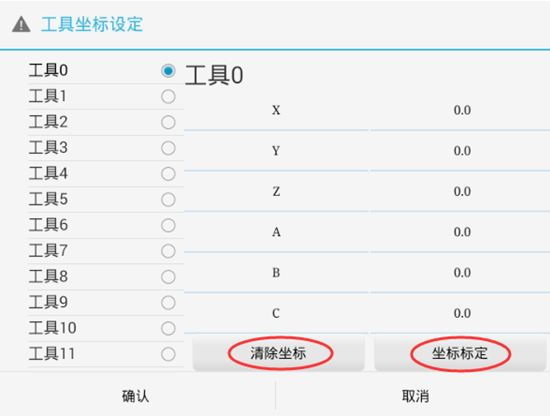
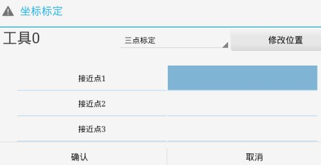
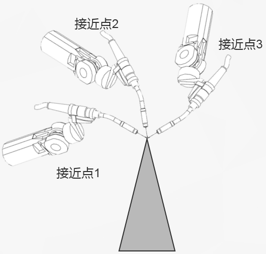

3.2 涂胶编程与操作
3.2.4胶枪工具坐标系设定
在进行涂胶编程之前，就需要构建起必要的编程环境，其中包括工具数据，需要在编程前进行定义。工具坐标系用于描述安装在机器人第六轴上的工具的TCP、位姿等参数数据。一般不同的机器人应用配置不同的工具，比如说弧焊的机器人使用弧焊枪作为工具，而用于搬运板材等机器人就会使用吸盘式的夹具作为工具。
HSR-612机器人默认工具的工具中心点位于第五轴和第六轴的交点，即位于于机器人手腕中心点，如图3-13所示。
图3-13 HSR-612机器人工具坐标系
HSR-612机器人控制系统支持16个工具坐标系设定。 点击图3-14界面中“工具坐标设定”，进入坐标系设定窗口，可设置相应工具坐标系的各个坐标值，如图3-15所示。
图3-14 工具坐标系设定界面1

图3-15 工具坐标系设定界面2
当所使用的工具相对与默认工具0只是TCP位置改变，而坐标方向没变，可点击修改位置改变的轴的坐标值，或者采用三点法标定工具坐标系。当TCP和坐标方向都发生改变时需采用六点法标定工具坐标系。其工具坐标系示意图如图3-16所示。
图3-16 工具坐标系示意图
本项目使用涂胶工具的TCP点设定在胶枪底部端点位置，相对与默认工具0的坐标方向没变，只是TCP相对于工具0的三个坐标值发生改变。所以，可采用三点法设定坐标系。
图3-17 工具坐标系设定界面
在图3-15所示对话框中，选中需要标定的工具号（工具0不能被标定），点击“清除坐标”，可将当前选中的坐标系的各个坐标值清零。单击如图3-14所示界面中的“工具坐标设定”按钮进入工具坐标系设定界面，单击“坐标标定”按钮，可弹出坐标标定对话框，选择“三点标定”选项，如图3-17所示。通过标定空间中机器人工具末端在坐标系中的三个不同位置来计算工具坐标系。
图3-18 坐标标定
工具坐标系三点标定法操作方法如下：
将工具 TCP（即工具坐标中心点）移动到第一个标定点，定为工具坐标系的原点，沿工具坐标系+X 方向移动一定距离作为 X 方向延伸点，再从工件坐标系 XOY 平面第一或第二象限内选取任意点作为 Y 方向延伸点。由此三个点计算出工具坐标系。
图3-19 三点标定工具坐标系